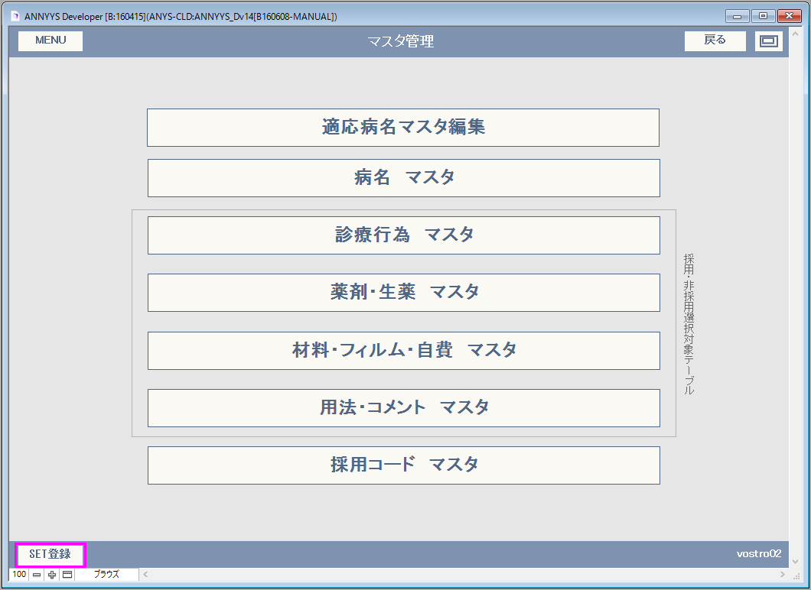

マニュアルの表現に関して
本マニュアルでは大文字英語の記号表現があります。この意味以下のようになりますので、ご理解の上お読みいただけますようお願い申し上げます。
| 記号 | 読み方 | 説明 |
|---|---|---|
| L(エル) | レイアウト | 表示されている画面の名称 |
| B(ビー) | ボタン | 画面上のボタン |
| F(エフ) | フィールド | 画面上の入力スペースのこと |
| T(タブ) | タブ | 画面上のタブスペースのタイトル |
| S(エス) | スクリプト | スクリプトメニューにあるスクリプト名 |
例１）L[メインメニュー] B[外来受付]
メインメニュー画面の、外来受付ボタン（を押す）となります。
例２）L[診療記録] T[病名] F[病名]
診療記録画面の、病名タブの、病名入力スペースとなります。
マスタ管理は各種マスタ情報を調べたり確認したりするためのデザインとなっています。マスタは随時更新されますが更新は別のDBManagerプログラムにおいて更新されます。

セット登録画面が開きます。セット登録は診察画面と同じ画面で診療行為を選択しながら登録する必要があります。B[SET登録]では、患者番号0,受付番号=0の受付内容が無効状態で診察画面を開き、セット登録が行えるようになっています。詳細は[診察画面]のT[診察セット登録]を参照してください。
データソース：DB_ANNYYS/tbl_byomei（※DBManager更新対象）
データソース：DB_ANNYYS/tbl_tensu（※DBManager更新対象）
このレイアウトではDB_ANNYYS/tbl_tensu収録データのうち現在有効なもので診療行為に関るものを表示できるようになっています。主だった項目区分は上部に配置された各種ボタンで表示内容を切り替えられます。
ボタン：B[診察] B[医管] B[在宅] B[注射] B[処置] B[手術] B[検査] B[画像] B[その他] B[検索]
【診療行為項目の採用登録】
データソース：DB_ANNYYS/tbl_tensu（※DBManager更新対象）

このレイアウトではDB_ANNYYS/tbl_tensu収録データのうち現在有効なもので薬剤・生薬に関るものを表示できるようになっています。主だった項目区分は上部に配置された各種ボタンで表示内容を切り替えられます。
ボタン：B[内服] B[外用] B[注射] B[生薬] B[造影] B[検索]
【薬剤・生薬の採用登録】
データソース：DB_ANNYYS/tbl_tensu（※DBManager更新対象）
このレイアウトではDB_ANNYYS/tbl_tensu収録データのうち現在有効なもので特定機材に関るものを表示できるようになっています。主だった項目区分は上部に配置された各種ボタンで表示内容を切り替えられます。
ボタン：B[材料] B[フィルム] B[検索]
【材料・フィルム・自費の採用登録】
【自費項目の追加登録】
B[自費+]をクリックして新しく追加されたレコードにコード番号・名称・金額・単位を入力します。
※ORCA連携の場合はORCA側の登録内容と同じコードで登録してください。
データソース：DB_ANNYYS/tbl_tensu（※DBManager更新対象）
このレイアウトではDB_ANNYYS/tbl_tensu収録データのうち現在有効なものでコメントに関るものを表示できるようになっています。主だった項目区分は上部に配置された各種ボタンで表示内容を切り替えられます。
ボタン：B[用法] B[部位] B[定型] B[補足] B[数日] B[その他] B[検索]
【用法・コメントの採用登録】
データソース：ANNYYS_D/tbl_inputcd(S[メンテナンス]>S[バックアップ],S[リストア]対象データ)
各マスタで採用登録を行ったデータです。採用登録したデータはANNYYS_D内のtbl_inputcdに収録されているので他のANNYYS_Dと内容が重複しません。そのため診療科や医師別に利用する項目だけを登録し診療行為入力を簡素化することができます。